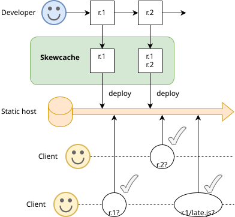

Skewcache is a tool for web developers. It hooks into the deployment step and copies downlevel versions of static assets into the deployment for the benefit of pre-existing client sessions that may want to fetch lazy-loaded JavaScript or similar subresources.

Skewcache is a good fit for projects that use a bundler like Vite, which can place assets under a configured directory path, and a hosting platform like Cloudflare Workers Static Assets, where each deployment atomically replaces the entire file set.
You can install skewcache from the npm registry or view the source code on GitHub. For usage instructions, refer to the Readme. Skewcache is written and maintained by Steve Kobes and available under an open-source (MIT) license.